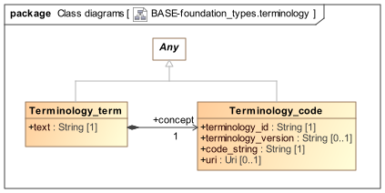

Terminology Package Overview The base.foundation_types.terminology package provides leaf types used to represent a terminology code, i.e. a code within a terminology, and a term, which is the combination of a code and one rubric (natural language) string associated with it. Terminology codes are sometimes called concept codes among terminology experts, and when used as references, concept references. An instance of Terminology_code is a reference to any referenceable entity within a terminology or ontology, which may be: a single term, for which a rubric(s) and potentially relationships (at least the IS-A relationship) are defined; a value set i.e. a set of single terms, possibly in a tree or other structure corresponding to relationships between the member terms; any other terminological entity referencable with a code. An instance of Terminology_term provides a way to record a terminology code and the rubric used in some operational context, allowing the receiver or reader of the data to avoid having to perform a terminology lookup to obtain the rubric, e.g. for display purposes.  Figure 1. base.foundation_types.terminology package Class Definitions Terminology_term Class Class Terminology_term Description Leaf type representing a standalone term from a terminology, which consists of the term text and the code, i.e. a concept reference. Inherit Any Attributes Signature Meaning 1..1 concept: Terminology_code Reference to the terminology concept formally representing this term. 1..1 text: String Text of term. Terminology_code Class Class Terminology_code Description Primitive type representing a standalone reference to a terminology concept, in the form of a terminology identifier, optional version, and a code or code string from the terminology. Inherit Any Attributes Signature Meaning 1..1 terminology_id: String The archetype environment namespace identifier used to identify a terminology. Typically a value like "snomed_ct" that is mapped elsewhere to the full URI identifying the terminology. 0..1 terminology_version: String Optional string value representing terminology version, typically a date or dotted numeric. 1..1 code_string: String A terminology code or post-coordinated code expression, if supported by the terminology. The code may refer to a single term, a value set consisting of multiple terms, or some other entity representable within the terminology. 0..1 uri: Uri The URI reference that may be used as a concrete key into a notional terminology service for queries that can obtain the term text, definition, and other associated elements. CODE_PHRASE Class Class CODE_PHRASE Description A fully coordinated (i.e. all coordination has been performed) term from a terminology service (as distinct from a particular terminology). Retain for LEGACY only, while ADL1.4 requires CODE_PHRASE. Attributes Signature Meaning 1..1 terminology_id: TERMINOLOGY_ID Identifier of the distinct terminology from which the code_string (or its elements) was extracted. 1..1 code_string: String The key used by the terminology service to identify a concept or coordination of concepts. This string is most likely parsable inside the terminology service, but nothing can be assumed about its syntax outside that context. 0..1 preferred_term: String Optional attribute to carry preferred term corresponding to the code or expression in code_string. Typical use in integration situations which create mappings, and representing data for which both a (non-preferred) actual term and a preferred term are both required. Invariants Code_string_valid: not code_string.is_empty Time Types Functional Meta-types